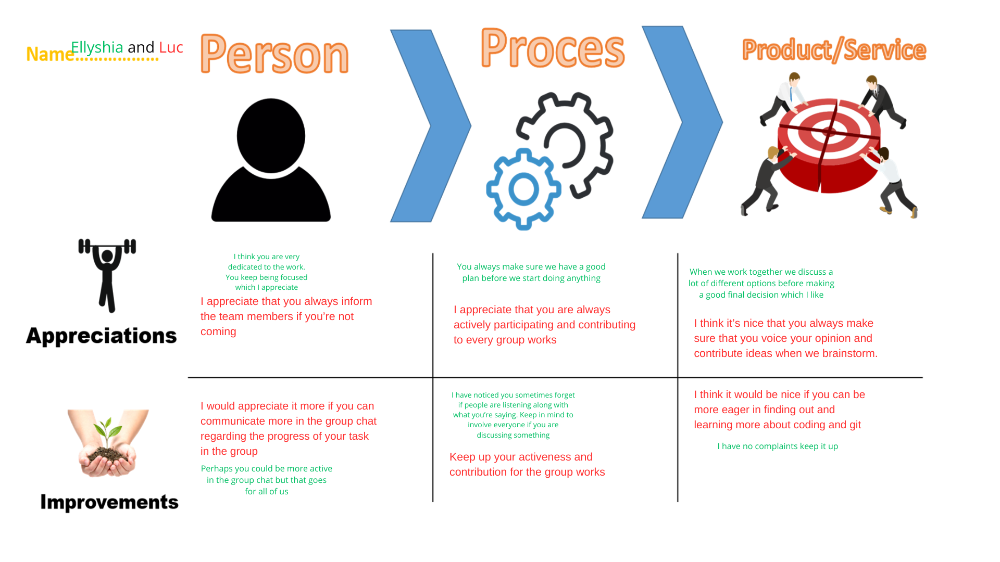

While working on my projects, be it individual or group project, I make sure to always be aware of what needs to be done for the project. I recognize when I need to ask for individual and group feedbacks to the teacher, and how important getting feedback is. Then when applicable, I implement the feedback given by the teachers to the projects.
Me and one of my teammates also did a group feedback to evaluate on each of our working ethics throughout the group work.

Reflection
I learned how to know the learning needs in myself by regularly asking for feedback from the teachers and from it got insight on what things I still need to improve.